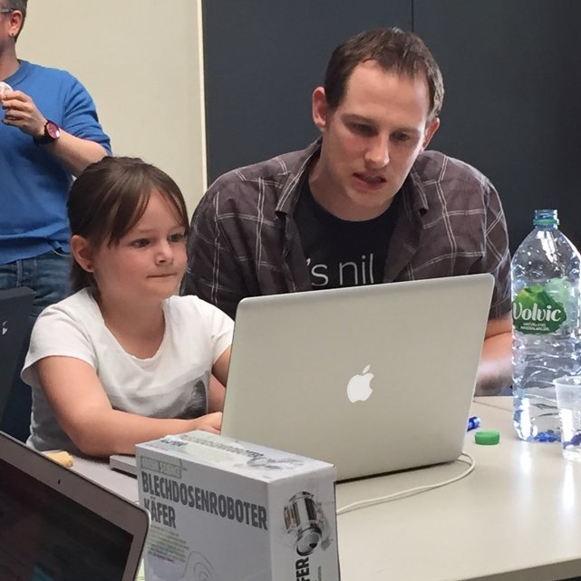
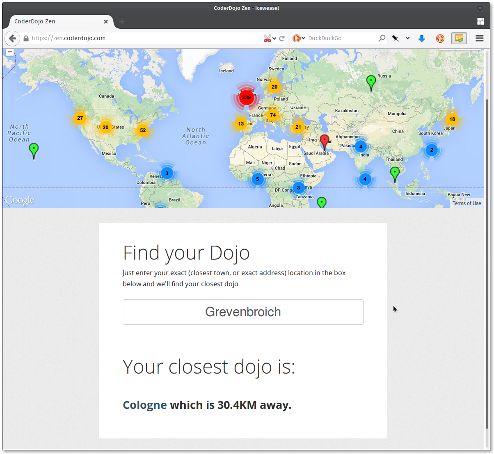
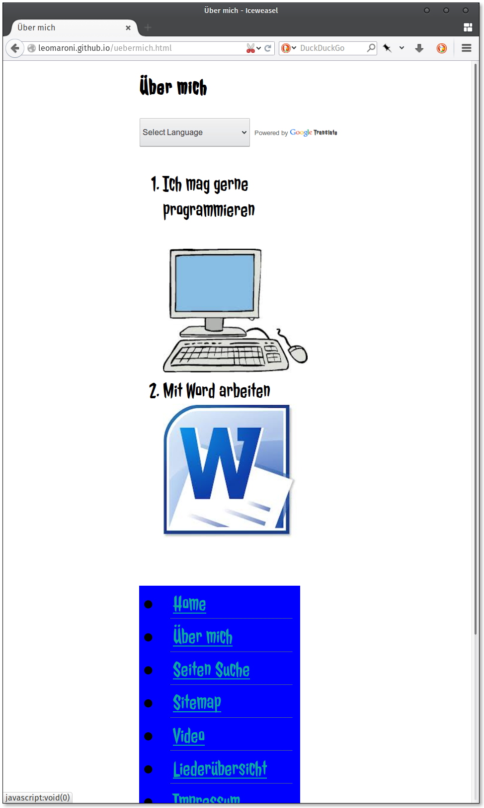
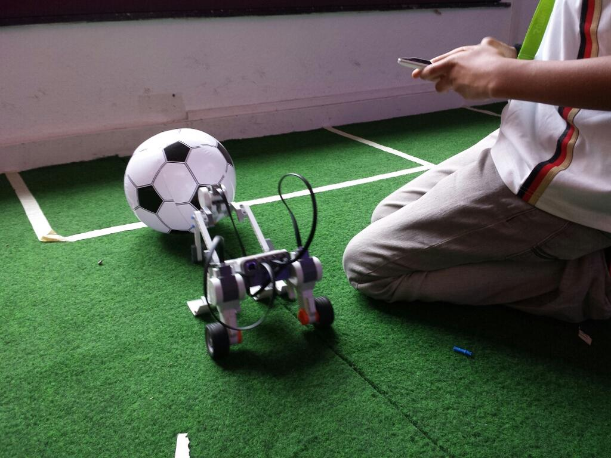
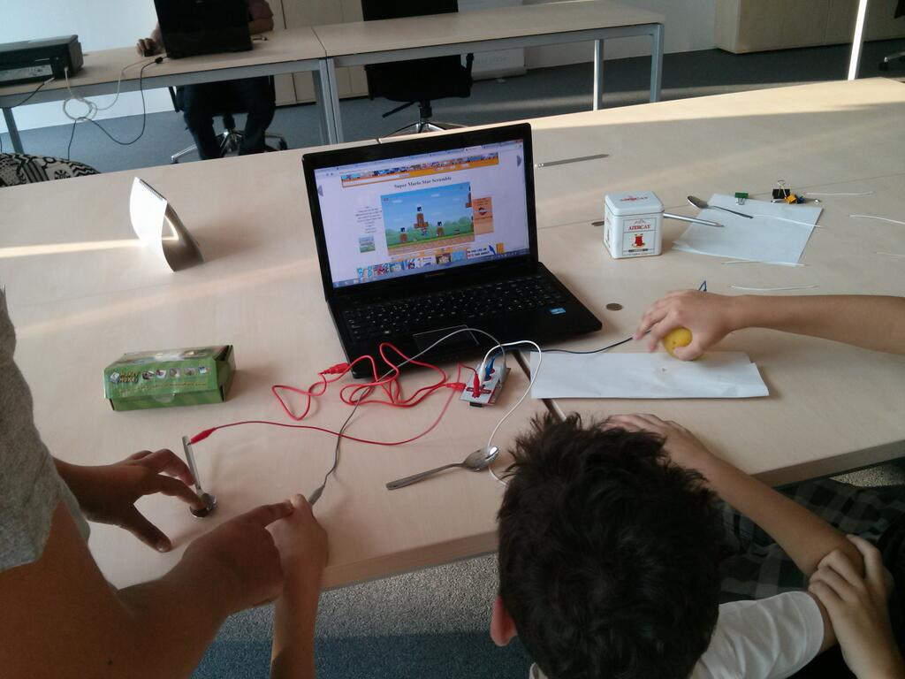
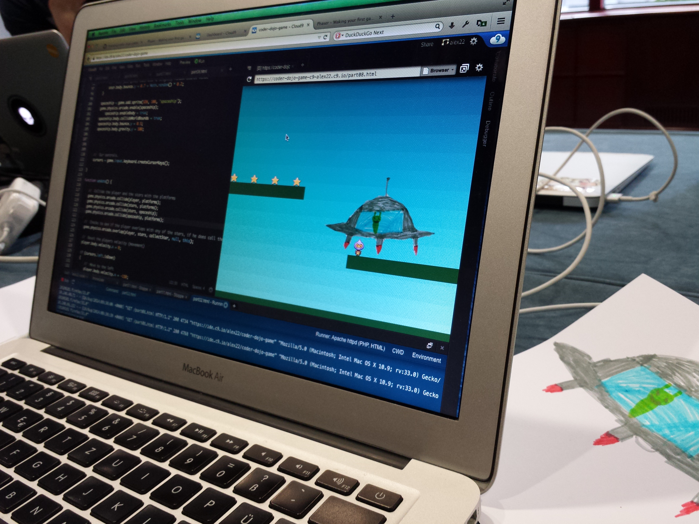

Kooperationspartner & Veranstaltungskonzeptfür Öffentliche Bibliotheken?
Coder‿Dōjō
道場
Was ist ein CoderDojo?
CoderDojo
- Kinder und Jugendliche lernen Programmieren
- Zusammen mit und von anderen Jugendlichen
- Wir organisieren einen Raum und freiwillige Mentoren
CoderDojo Foundation
- Gegründet in Irland
- Loses Team ehrenamtlicher Helfer
- Mittlerweile über 400 Dojos in 43 Ländern
- 9 davon in Deutschland
zen.coderdojo.com
Das CoderDojo Köln
- Monatliche Treffen
- Bis zu 15 Teilnehmer 5-15 Jahre
- Wechselnde Orte
- Wechselnde Projekte
🕔
- Immer in Begleitung eines Erziehungsberechtigten
- Max. 2 Kinder pro Mentor
- Samstag-Nachmittag, 4-5h inkl. 1h Pause
…und das ist kein Informatik-Unterricht?
- Wir sind keine Pädagogen.
- Schule – am Wochenende?
- Keine unterschiedlichen Altersklassen.
- Die Kinder programmieren worauf sie Lust haben.
Die Projekte
Webseiten
Roboter
Mini-Elektronik
Spiele
Anforderungen
- Kleinen »Konferenz«-Raum
- Steckdosen
- Internet-Zugang
- Am Wochenende geöffnet
Vielen Dank für Ihre Aufmerksamkeit!